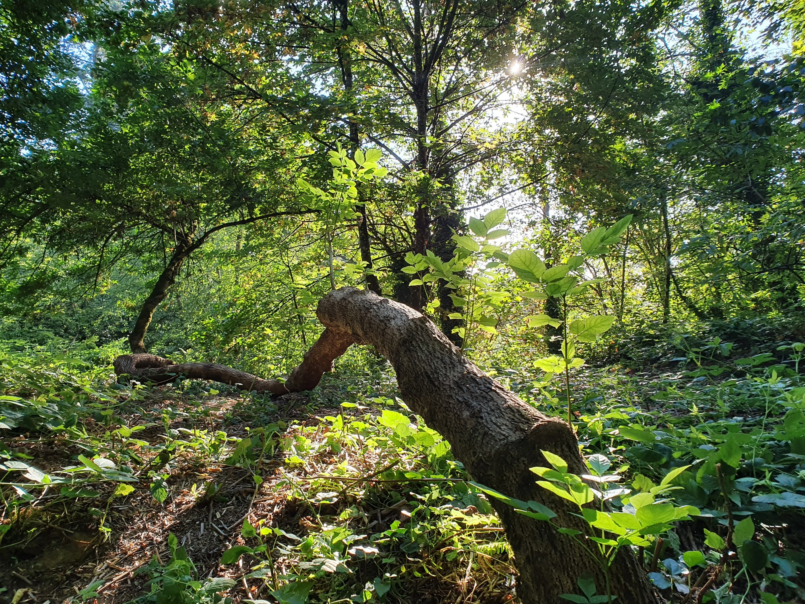
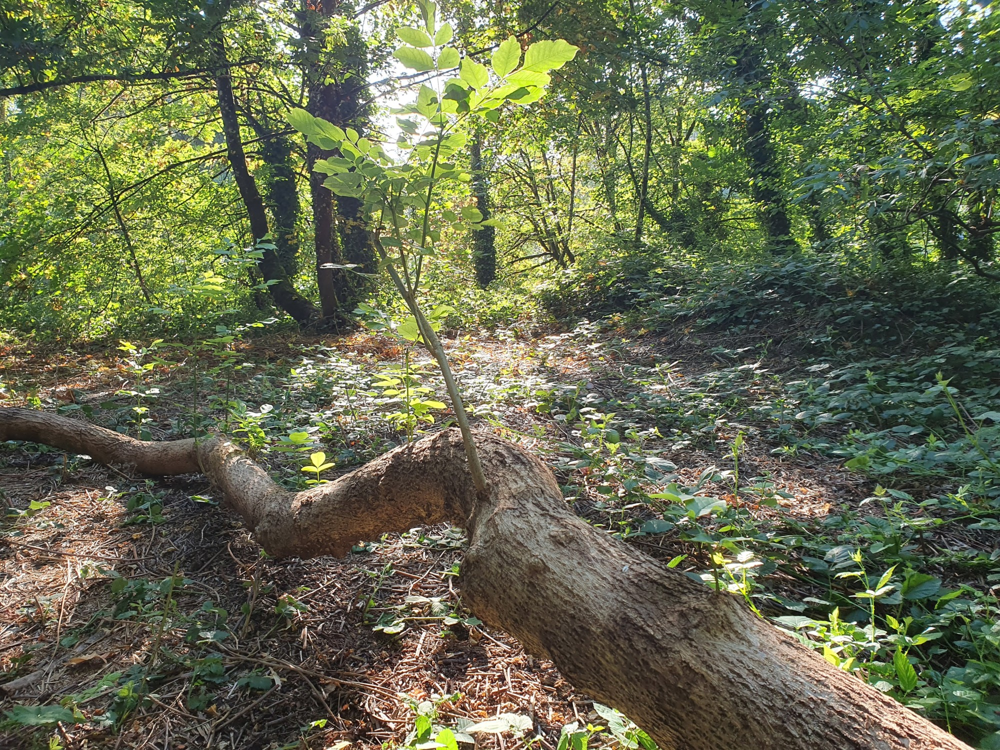

Two Trees
I care for some forested property near where I live. In the image above, I have always liked the tree on the left, with multiple trunks. Parts of it now exceed the limits of my ladders.
NOTE: Drag the images onto the desktop browser's title bar to open them in a new window with their original size and to allow zooming.
Due to deep thorn blackberry overgrowth, I had largely ignored a nearby smaller tree of the same variety but with a single trunk, which in the center and to the right in the image.
In spring of 2020, I finally removed some of the blackberry and found that this second tree had experienced some trauma early in life, likely involving overgrowth by various species. It adapted by growing horizontally rather than vertically, and by establishing additional root systems at various places along that horizontal growth.
No alt text provided for this image After I removed the blackberry, I was surprised and excited to find a single stalk growing out of the horizontal trunk. Over time, more and more sprouts developed, and now I believe that there may be at least thirty new growths.

I like to watch and help things grow, whether plants or animals or my children or a software product or system or a developer community or a business or anything else.

A better storyteller could use this in various metaphors about life, but I have to get to work.
Previous Publication and Comments
This article was previously published at the following URL, which would be the place to comment: